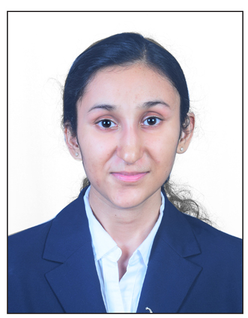

Athlete • Lifelong Learner • MBA Student • Aspiring Business Leader
I am Pooja Singh, an MBA (Business Management) student at XIM University, Bhubaneswar and a B.Com graduate from S.K. Somaiya College, University of Mumbai. My journey across sports, academics and self-driven exploration has shaped my ability to adapt, analyse and solve problems while building a strong foundation in leadership and strategic thinking. I aspire to build a career at the intersection of consulting, finance and entrepreneurship to create meaningful impact.

I believe discipline and curiosity are equally important in shaping leadership. Eight years of Karate and national-level Taekwondo participation taught me resilience, consistency and performing under pressure. Exploring UPSC broadened my understanding of governance, geopolitics and public policy while strengthening my analytical thinking. Today, I am drawn towards understanding how businesses solve real-world challenges and aspire to build a career that combines strategic thinking, finance and leadership.
XIM University, Bhubaneswar
Batch : 2026 – 2028
S.K. Somaiya College of Arts, Science and Commerce
University of Mumbai
CGPA : 8.42
Kendriya Vidyalaya Bhandup
(Kendriya Vidyalaya Sangathan)
Eight years of Karate taught me consistency, focus and resilience.
UPSC exploration broadened my perspective and strengthened analytical thinking.
Excel • Microsoft Access • MySQL • Visual Basic • C Programming
I am particularly interested in consulting because it offers exposure to diverse industries and structured problem-solving opportunities. Alongside consulting, finance is an area I am eager to explore further during my MBA journey. My long-term aspiration is entrepreneurship and creating meaningful impact.